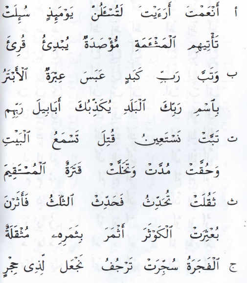

Materi 2
Makhraj dan Sifat Huruf dalam Kata
_________________________
A. Uraian Sifat Huruf Berlawanan
1. جَهْرٌ (JAHAR) = Jelas. Maksudnya ialah membunyikan huruf dengan tidak berdesis dan nafas tertahan, sehingga bunyi terdengar lebih jelas dan bersih. Hurufnya ada 19 yaitu :
عَظُمَ وَزْنُ قَارِئٍ ذِيْ غَضٍّ جِدٍّ طَلَبَ
2. هَمْسُ (HAMAS) = Samar. Maksudnya ialah membuinyikan huruf dengan berdesis dan nafas terlepas, sehingga bunyi huruf terdengar agak samar. Hurufnya ada 10 yaitu : فَحَثَّهُ شَخْصٌ سَكَتَ
3. شِدَّةٌ (SIDDAH) = Kuat. Maksudnya ialah membunyikan huruf dengan suara tertahan dan lebih kuat tertahannya ketika mati atau waqaf. Hurufnya ada 8 yaitu : اَجِدُ قِطَّ بَكَتْ
4. رَخَاوَةٌ (Rakhawah) = Lunak. Maksudnya ialah membunyikan huruf dengan suara terlepas, berlalu /berjalan beserta huruf itu. Hurufnya ada 16 yaitu :
خُذْ غَثَّ حَظَّ فّضَّ شُوْصٍ زَيَ سَاهٍ
5. اِسْتِعْلاَءٌ (ISTI’LA’)= Terangkat. Maksudnya ialah membunyikan huruf dengan mengangkat pangkal lidah ke langit-langit mulut, sehingga bunyi huruf menjadi lebih tinggi, tebal dan berat. Hurufnya ada 7 yaitu : خُصَّ ضّغْطٍ قِظْ
6.اِسْتِفَالٌ (ISTIFAL) = turun. Maksudnya ialah membunyikan huruf dengan menurunkan pangkal lidah ke dasar lidah, sehingga bunyi huruf menjadi rendah, tipis dan ringan. Hurufnya ada 22 yaitu : ثَبَتَ عِزُّ مَنْ يُجَوِّدُ حَرْفَهُ اِنْ سَلَّ شَكَا
7. اِطْبَاقٌ (ITHBAQ) = Tertutup. Maksudnya ialah membnyikan huruf dengan melengkungkan keliling lidah ke langit-langit mulut, sehingga bunyinya lebih besar dan berat. Hurufnya ada 4 yaitu : صَضْطَظَ
8. اِنْفِتَاحٌ (NFITAH ) = Terbuka. Maksudnya ialah membunyikan huruf dengan pertengahan lidah terbuka (tidak melengkungkan keliling lidah ke langit-langit), sehingga bunyi huruf lebih kecil dan ringan. Hurufnya 25 yaitu:
مَنْ اَخَذَ وَجَدَ سَعَةً فَزَكَا حَقٌّ لَهُ شُرْبُ غَيْثٍ
9. اِصْمَاتٌ (ISHMAT) = Diam atau menahan. Maksudnya ialah membunyikan huruf dengan berat dan tertahan. Hurufnya ada 23 yaitu :
جَزُّ غِشَّ سَاخِطٍ صَدَّ ثِقَةٍ اِذْوَعَظَهُ يَحُضُّكَ
10 اِذْلاَقٌ (IDZLAQ) = Lancar, ujung atau tajam. Maksudnya ialah membunyikan huruf dengan ringan dan lancar. Hurufnya ada 6 yaitu : فَرَّ مِنْ لُبٍّ
B. Uraian Sifat Huruf Tidak Berlawanan
11. تَوَسُّطٌ (TAWASSUTH) = Pertengahan antara Syiddah dan Rakhawah. Maksudnya ialah membunyikan huruf
12. لَيِّنٌ (LAYYIN) = Lunak. Maksudnya ialah membunyikan huruf dengan lunak, lemah dan lembut, ketika huruf itu mati dan jatuh sesudah harakat fathah. Hurufnya ada 2 yaitu : _َوْ _َ يْ = خَوْفٌ - سَوْفَ - كَيْفَ - اِلَيْكَ -
13. اِنْحِرَافٌ (INHIRAF) = Condong. Maksudnya ialah membunyikan huruf condong ke ujung lidah dengan sedikit melenturkan (melengkungkan) lidah. Hurufnya ada 2 yaitu : ل ر
14. تَكْرِيْرٌ (TAKRIR) = Mengulang-ulang. Maksudnya ialah membunyikan huruf dengan lidah bergetar tidak lebih dari dua getaran. Apabila getarannya sampai tiga kali, maka tercelalah. Dan apabila sampai empat getaran, berarti huruf itu telah menjadi dua huruf. Hurufnya ada satu yaitu : ر
15.صَفِيْرٌ (SHAFIR) = Siul atau seruit. Maksudnya ialah membunyikan huruf dengan berdesir bagaikan suara seruling. Hurufnya ada tiga, yaitu : ص ز س
16. تَفَشِّيْ (TAFASY-SYI) = Menyebar. Maksudnya ialah membunyikan huruf dengan angin tersebar di mulut. Hurufnya ada satu, yaitu : ش
17.قَلْقَلَةٌ (QALQALAH) = Goncang. Maksudnya ialah membunyikan huruf dengan concangan pada makhrajnya, sehingga terdengar pantulan suara yang kuat pada sat mati atau dimataikan karena berhenti (waqaf) Hurufnya ada lima, yaitu : قُطْبُ جَدٍ
Qalqalah terbagi menjadi dua, yaitu :
a. قَلْقَلَةٌ صُغْرَى (QALQALAH SHUGHRA), yaitu pantulan suara huruf qalqalah agak lebih kecil, karena huruf qalqalahnya itu mati asli berada di tengah-tengah kata atau kalimat. Contoh : يَقْبَلُ – يَطْبَعُ – يَدْخَلُ – يَجْعَلُ – يَبْتَغُ
b. قَلْقَلَةٌ كُبْرَى (QALQALAH KUBRA), yaitu pantulan suara huruf qalqalah agak lebih besar, karena huruf qalqalahnya itu sebenarnya hidup, tapi dimatikan ketika waqaf (menghentikan bacaan). Contoh :
قُلْ هُوَ اللهُ اَحَدٌ - اَللهُ الصَّمَدُ- لَمْ يَلِدْ وَلَمْ يُوْلَدْ- وَلَمْ يَكُنْ لَّه كُفُوًااَحَدٌ
قُلْ اَعُوْذُ بِرَبِّ الْفَلَقِ- مِنْ شَرِّ مَا خَلَقَ- وَمِنْ شَرِّالنَّفَّاثَاتِ فِى الْعُقَدِ-وَمِنْ شَرِّ حَاسِدٍ اِذَا حَسَدَ
18. اِسْتِطَالَةٌ (ISTITHALAH) = Memanjang. Maksudnya ialah membunyikan huruf dengan memanjang di salah satu tepi pangkal lidah sampai ke depan. Hurufnya ada satu, yaitu : ض
19. غُنَّةٌ (GHUNNAH) = Berdengung. Maksudnya ialah membunyikan huruf dengan suara berdengung yang keluar dari pangkal hidng. Hurufnya ada dua, yaitu : م ن
C.Latihan
